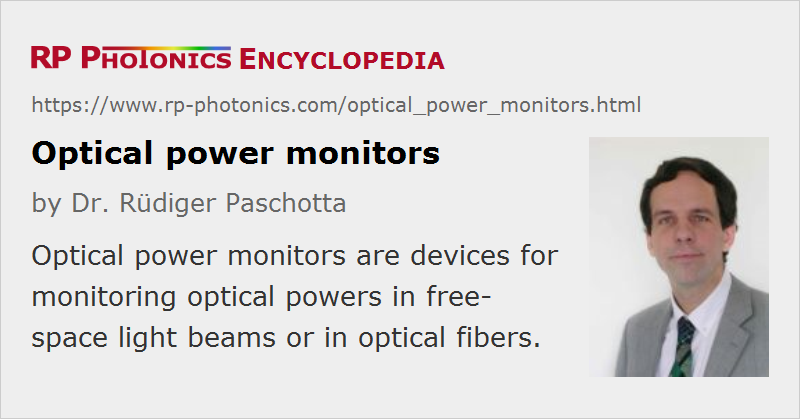

Optical Power Monitors
Definition: devices for monitoring optical powers in free-space light beams or in optical fibers
German: optischer Leistungsmonitor
Categories: fiber optics and waveguides, photonic devices, light detection and characterization, optical metrology
How to cite the article; suggest additional literature
Author: Dr. Rüdiger Paschotta
Optical power monitors are devices which can be used for monitoring optical powers. In contrast to optical power meters, they are often used for long-term monitoring during normal operation rather than only during short tests. They are therefore often permanently integrated into some systems, e.g. in laser devices and in systems for optical fiber communications. Also, they are often used such that the monitored light beam can still be used for its actual purpose.
Optical power monitors should not be confused with optical channel monitors, which can measure the optical powers of separate wavelength channels of a wavelength division multiplexing system.
Free-space Optical Power Monitors
Devices for monitoring free-space light beams are in principle similar to many laboratory power meters, e.g. consisting of a measurement head containing a photodiode (or other kind of photodetector) and an electronic device which may contain a display and/or connections for the electronics. As an addition to the measurement head, some optical filters may be supplied, which can be used e.g. for extending the measurement range to higher powers and/or for suppressing unwanted influences of some wavelength components. There are also adapters for use in conjunction with an optical fiber.
The measurement head is usually not supplied with a universal mount, since such devices are often used as OEM parts for integration into other devices, where the integrator will design a mount which is suitable for the particular purpose. In many cases, the measurement head will be mounted together with a beam splitter which directs only some fraction of the power of the monitored beam onto the photodetector, so that most of the light can be used for the actual purpose.
The electronic part is usually simple to use. It just needs to be supplied with some voltage (often a DC voltage of 12 V, for example, or 5 V via a USB connector) and perform some useful functions like digitizing the analog signal from the measurement head and applying wavelength-dependent calibration factors. Such devices can have different electronic interfaces, which can be analog or digital. For example, some have an USB interface for connection to a computer; some software is then usually supplied, which can e.g. display the current power and also power values recorded over some time interval. Such software may also process data from multiple power monitors and may then also display power differences or ratios, for example. In case that the registered power leaves a certain predefined range, the software can create an alarm.
In other cases, the electronic part of the power monitor itself contains a data logger which records the power values over some time interval. These data can then be retrieved e.g. in case that an anomaly of the system has been detected.
Fiber-optic Power Monitors
Optical power monitors are often used in conjunction with fiber-optic systems, e.g. in the context of optical fiber communications. For example, such a device can monitor the average output power of an erbium-doped fiber amplifier (EDFA), and some feedback system may automatically stabilize the output power by adjusting the drive current of the pump diodes of the fiber amplifier. That way, influences of aging pump diodes or varying input power levels can be compensated, and defects can be recognized. Some devices have a quite large measurement bandwidth, so that they are suitable not only for monitoring average powers, but even for retrieving data signals; there may be different bandwidth settings, e.g. a “slow” and “fast” detection mode.
A common form of fiber-optic power monitor is a small hermetically sealed in-line monitor with a fiber input and output. The fibers may be single-mode fibers, e.g. standard fibers like Corning SMF-28e, mounted on opposite sides or on the same side of the device. Such a device may contain a fiber coupler which splits off some small fraction of the power and directs it to a photodiode. Therefore, the device may cause only a small optical insertion loss (typically far below 1 dB) and very high return loss (e.g. > 50 dB). Polarization-dependent loss (PDL) is also usually quite small. Because the actual measurement is done using only a small part of the power extracted with an integrated tap, such monitors are also called integrated tap monitors. A display may be integrated in the device itself or connected with some electrical cable.
Due to the directional nature of the usual fiber couplers, such an in-line power monitor will often be sensitive only to light propagating in a certain direction, while light sent into the output port will be transmitted to the input port (with the same insertion loss) but not detected. It is therefore important not to confuse input and output port.
There are also devices without directionality – particularly those where the two fibers are on the same side. Here, the light may internally be coupled out of a fiber, focused onto a dielectric mirror with non-normal incidence, and the reflected light (carrying most of the optical power) is focused back into the other fiber. The small fraction of power transmitted through the dielectric mirror hits the monitor photodiode.
Some devices have a larger number of fiber inputs and outputs, e.g. for monitoring multiple channels in a WDM system. Fiber-optic power monitors are also available with multimode fibers, e.g. for use in short-distance data transmission systems.
In-line power monitors may be permanently integrated into fiber-optic systems, but can also be temporarily used, ideally with fiber connectors.
In the simplest case, a device always displays the currently measured optical power – for example, in milliwatts or in dBm. Some devices can be switched to relative power display – after storing some reference power, the deviation of the current power from that the reference power can be displayed in percent or in decibels. There may be also an integrated data logger for retrieving power values recorded at earlier times.
Suppliers
The RP Photonics Buyer's Guide contains 18 suppliers for optical power monitors.
Questions and Comments from Users
Here you can submit questions and comments. As far as they get accepted by the author, they will appear above this paragraph together with the author’s answer. The author will decide on acceptance based on certain criteria. Essentially, the issue must be of sufficiently broad interest.
Please do not enter personal data here; we would otherwise delete it soon. (See also our privacy declaration.) If you wish to receive personal feedback or consultancy from the author, please contact him e.g. via e-mail.
By submitting the information, you give your consent to the potential publication of your inputs on our website according to our rules. (If you later retract your consent, we will delete those inputs.) As your inputs are first reviewed by the author, they may be published with some delay.
See also: optical power, optical power meters, photodetectors, optical fiber communications
and other articles in the categories fiber optics and waveguides, photonic devices, light detection and characterization, optical metrology
|  |
If you like this page, please share the link with your friends and colleagues, e.g. via social media: 


These sharing buttons are implemented in a privacy-friendly way! |
2020-03-21
What is the difference between optical power monitor and optical channel monitor?
Answer from the author:
A channel monitor can measure the optical powers of separate wavelength channels of a wavelength division multiplexing system, while a power monitor can only measure the total optical powers.